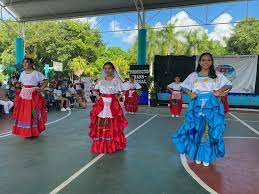

El Colegio de Bachilleres Cancun Plantel Dos cuenta con una variedad de paraescolares, que son para que los alumnos fuera de horario de clases desarrollen una actividad por parte de la escuela, ayudandolos a triunfar o desarrollando nuevas cualidades en ellos, los paraescolares que hay son 5 en total, tambien dentro de cada paraescolar se encuentra el area de alumnos (paraescolar) y el area de alumnos selectos (selectivos).
Para entrar al paraescolar cuando te inscribes de tan una lista y pones tres opciones de paraescolares a tu eleccion, y de esas tres se escoge en la que quedaras, luego para estar en selectivo el profesor de ese paraescolar te hara una prueba para ver si puedes estar.Solo se puede estar en un paraescolar no mas ni menos.
Con los que cuenta este plantel son:
El paraescolar de basquet es para todos los alumnos, se da una clase a la semana por grupo de semestre igual para los alumnos.Este paraescolar tiene un grupo selectivo que es el equipo de la escuela, aqui se encuentran alumnos de todos los grados.
Para entrar al selectivo de basquetbol la profesora a inicios de cada semestre de (agosto) hace una prueba invitando a todos los que estan dentro del paraescolar de basquetbol, tanto como el turno de la tarde como el de la mañana, haciendote un examen de rendimiento para ver si puedes estar.
El paraescolar de futbol hay equipo femnil y varonil, tambien este paraescolar cuenta con area de selectivo que son los grupos que juegan contra otros diferentes planteles o aveces hasta con el mismo plantel, equipo femenil y varonil.
El horario de este paraescolar es entre semana dependiendo en que grado y turno estes. Pra los selectivos los dias de entrenamiento aparte son los dias sabados en la mañana.
La danza es un tipo de arte que ayuda a los jovenes a sacar lo que llevan adentro a travez de los pasos, la musica y las expresiones del cuerpo. Este paraescolar estan los jovenes bailarines que luego hacen sus presentaciones en eventos de la escuela y clausuras, tambien han participados en carnavales.

EL paraescolar de pintura es ideal para los alumnos que tienen ese talento de crear con sus manos obras hermosas, en este paraescolar es uno de los paraescolares mas traqnuilos y hasta algunos alumnos han dicho que aveces les ayuda olvidar se de sus estres que cargan dia a dia.
Normalmente el paraescolar de pintura hace expocisiones de los artes que hacen los alumnos referentesd a la fecha festiva de ese mes. Como veremos en la siguiente imagen de las pinturas del dia de muertos, tambien puede haber de San Valentin, Navidad, etc.El grupo selectivo de este paraescolar es quien hace las mejores pinturas aveces hasta llegando a crear el logo del plantel.